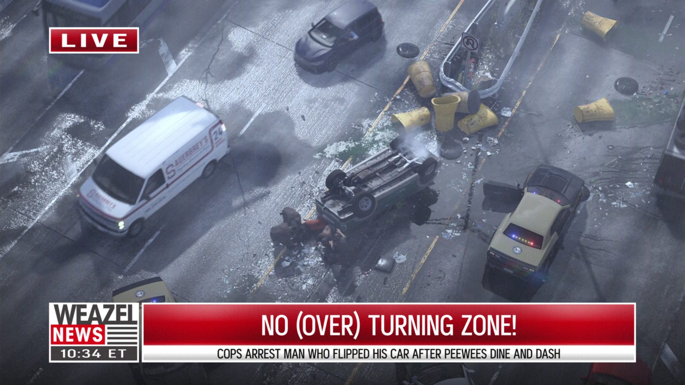
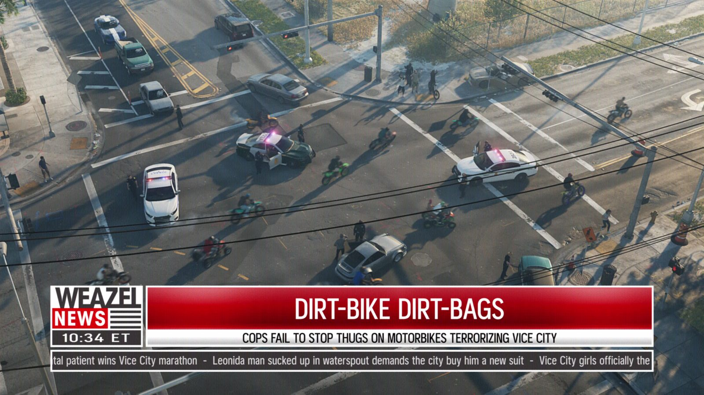

Weazel News и Fox News
Опубликовано:
Плашка LIVE, съёмка с вертолёта и кричащие заголовки — стёб над американскими кабельными новостями. В GTA V у канала был девиз «Confirming Your Prejudices» — «Подтверждаем ваши предрассудки».

- В первом трейлере GTA 6 мелькают выпуски Weazel News: «живая» съёмка с вертолёта и заголовки про очередных нарушителей.
- Заголовок «NO (OVER) TURNING ZONE!»: полиция арестовала мужчину, который перевернул машину, уходя из закусочной не заплатив.
- Weazel News — вымышленный канал серии GTA; в GTA V его девиз — «Confirming Your Prejudices».
- В 2013 году журналисты и преподаватели обсуждали Weazel как пародию на Fox News; сама Rockstar прототип не называла.
Что в игре
Кадр из первого трейлера: вид с вертолёта на перекрёсток после аварии — перевёрнутая машина, разбросанные конусы, полицейские машины. В углу — красная плашка «LIVE», внизу — логотип Weazel News, время «10:34 ET» и крупный заголовок «NO (OVER) TURNING ZONE!». Под ним строка: полиция арестовала мужчину, который перевернул машину после побега из закусочной Peewees без оплаты.
Через пару секунд — ещё один выпуск, теперь про байкеров на улицах: «DIRT-BIKE DIRT-BAGS». Заголовки построены как каламбуры, а сюжеты — как вирусные «флоридские» новости.

Что в реальности
Fox News — американский кабельный новостной канал, в эфире с октября 1996 года. Формат, который узнаётся в Weazel, — общий для кабельных новостей США: плашка «LIVE», съёмка с вертолёта, бегущая строка и заголовки, которые должны зацепить с первой секунды.
В 2013 году, после выхода GTA V, журналисты спрашивали экспертов, высмеивает ли Weazel именно Fox News. Преподаватель Университета Уэйк-Форест ответил: «Они определённо проходятся по Fox News». Другие говорили о стёбе над кабельными новостями вообще. Fox News от комментариев отказался.
С 1996 года Fox News использовал девиз «Fair & Balanced» — «Честно и взвешенно» — и отказался от него в 2017-м. Пародийный девиз Weazel из GTA V, «Подтверждаем ваши предрассудки», — его зеркальная противоположность.
Совпадает и отличается
| Реальность | GTA 6 | |
|---|---|---|
| Плашка LIVE и съёмка с вертолёта | Да | 🟢 Да |
| Кричащие заголовки | Да | 🟣 Утрированы, каламбуры |
| Девиз | Fair & Balanced (до 2017) | 🟣 Confirming Your Prejudices (GTA V) |
| Название | Fox News | 🟣 Weazel News |
Источники: Rockstar Games (трейлер 1 GTA 6); Online News Association (journalists.org) — «The Fox News parody of Grand Theft Auto V? You decide» (2013); Fox News Channel.
Реальные фото: Фото: David Shane from United States of America, CC BY 2.0 · Wikimedia Commons. Кадры игры: Rockstar Games.
Каждый день — одно сравнение: кадр игры рядом с реальным фото. Подписывайтесь:
YouTubeInstagramTikTok